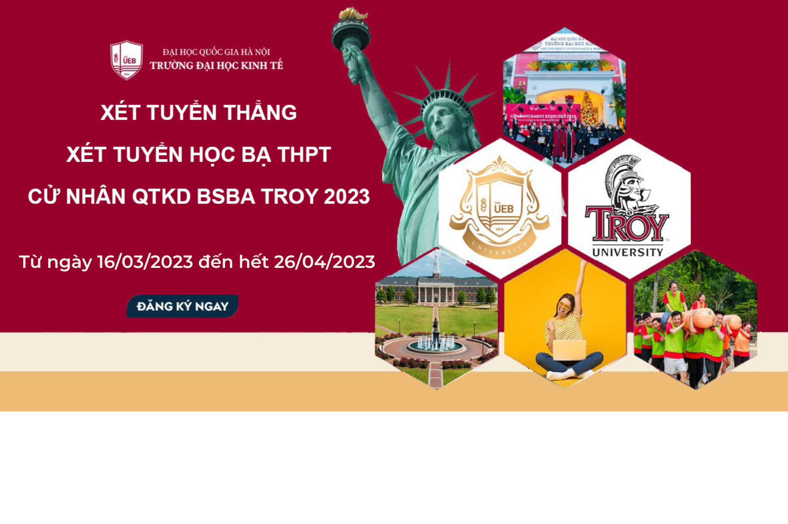

Trường Đại học Kinh tế - ĐHQGHN xét tuyển trực tiếp 90 chỉ tiêu BSBA TROY Khóa 22
Từ ngày 16/03/2023, Trường Đại học Kinh tế - ĐHQGHN thông báo tiếp tục xét tuyển trực tiếp 90 chỉ tiêu có chứng chỉ Tiếng Anh quốc tế đủ điều kiện (tối thiểu đạt IELTS 5.5 , TOEFL iBT 72, bậc 4 VSTEP) vào Chương trình Cử nhân Quản trị Kinh doanh, hệ đại học chính quy do đối tác nước ngoài cấp bằng với Đại học Troy (Hoa Kỳ), Khóa 22 (2023-2027). Cụ thể:
1. Chỉ tiêu: 90 sinh viên.
2. Chương trình đào tạo: Cử nhân Quản trị Kinh doanh, chuyên ngành (major) Kinh doanh Quốc tế (Global Business). Có 02 chuyên ngành sâu (Concentration) cho sinh viên lựa chọn:
Management
Data Analytics

Chi tiết về chương trình Cử nhân QTKD liên kết với ĐH Troy, Hoa Kỳ